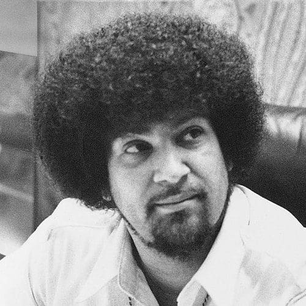

Welcome to the History page! Here, you will learn the most important/relevant information about the history of the legendary Tempts!
---------------------------------------------------------------------------------------------------------------------------------
INTRODUCTION

The Temptations are an American vocal group from Detroit, Michigan, who released a series of successful singles and albums with Motown Records during the 1960s to mid 1970s. The group's work with producer Norman Whitfield, beginning with the Top 10 hit single "Cloud Nine" in October 1968, pioneered psychedelic soul, and was significant in the evolution of R&B and soul music. The band members are known for their choreography, distinct harmonies, and dress style. Having sold tens of millions of albums, the Temptations are among the most successful groups in popular music.

Featuring five male vocalists and dancers (save for brief periods with fewer or more members), the group formed in 1960 in Detroit under the name "The Elgins". The founding members came from two rival Detroit vocal groups: Otis Williams, Elbridge "Al" Bryant, and Melvin Franklin of "Otis Williams & the Distants", and Eddie Kendricks and Paul Williams of "The Primes". In 1964, Bryant was replaced by David Ruffin, who was the lead vocalist on a number of the group's biggest hits, including "My Girl" (1964), "Ain't Too Proud to Beg" (1966), and "I Wish It Would Rain" (1967). Ruffin was replaced in 1968 by Dennis Edwards, with whom the group continued to record hit records such as "Cloud Nine" (1968), "I Can't Get Next to You" (1969), and "Ball of Confusion (That's What the World Is Today)" (1970). Kendricks and Paul Williams both left the group in 1971, with subsequent members including Richard Street, Damon Harris, Glenn Leonard, Ron Tyson, and Ali-Ollie Woodson, the last of whom was the lead singer on late-period hit "Treat Her Like a Lady" in 1984 and the theme song for the children's movement program "Kids in Motion" in 1987.

Over the course of their career, the Temptations released four Billboard Hot 100 number-one singles and fourteen R&B number-one singles. Their music has earned four Grammy Awards. The Temptations were the first Motown recording act to win a Grammy Award - for "Cloud Nine" in 1969 - and in 2013 received the Grammy Lifetime Achievement Award. Six of the Temptations (Edwards, Franklin, Kendricks, Ruffin, Otis Williams and Paul Williams) were inducted into the Rock and Roll Hall of Fame in 1989. Three classic Temptations songs, "My Girl", "Just My Imagination (Running Away with Me)", and "Papa Was a Rollin' Stone", are among the "The Rock and Roll Hall of Fame's 500 Songs that Shaped Rock and Roll". The Temptations were ranked at number 68 on "Rolling Stone" magazine's list of the 100 Greatest Artists of all time.

In 2023, the Temptations were ranked as the #1 artist on the Top 100 Greatest R&B/Hip-Hop Artists Of All Time according to Billboard magazine.
As of 2024, the Temptations continue to perform with founder Otis Williams in the lineup (Williams owns the rights to the Temptations name).
HISTORY
---------------------------------------------------------------------------------------------------------------------------------
ORIGINS

Eddie Kendricks and Paul Williams began singing together in church as children in Birmingham, Alabama. By their teenage years, they formed a doo-wop quartet in 1955 with Kell Osborne and Wiley Waller, naming themselves the Cavaliers. They later moved to Detroit and changed their name to "The Primes" under Milton Jenkins. The Primes became known for their meticulous performances and later created a sister group, "The Primettes", later known as "The Supremes". Kendricks was seen as a "matinee idol" in the Detroit area, while Williams was well-received for his baritone vocals.

In 1958, Otis Williams moved to Detroit from Texas and became the leader of a vocal group called "Otis Williams and the Siberians", by 1958. The group included Elbridge "Al" Bryant, James "Pee-Wee" Crawford, Vernard Plain and Arthur Walton. The group recorded a song, "Pecos Kid" for a label run by radio deejay Senator Bristol Bryant. Shortly after its release, the group changed its name to The El Domingoes. Subsequently, Montgomery native Melvin Franklin replaced Arthur Walton as bass vocalist and Detroit-born Richard Street (claimed by Melvin Franklin to be his cousin) replaced Vernard Plain as lead singer. Signing with Johnnie Mae Matthews' Northern Records, the group had their name changed again to the Distants.
The Distants recorded two singles, "Come On" (1959) and "Alright" (1960), with Albert "Mooch" Harrell replacing Pee-Wee Crawford. "Come On" became a local hit, and the Warwick Records label picked the record up for national distribution. Following the release of "Alright", Matthews appointed Williams as the group leader, and the group's name was changed to "Otis Williams & The Distants".
Both the Primes and Distants were influenced by other vocal groups, including The Miracles, The Cadillacs, Frankie Lymon & The Teenagers, The Drifters, and The Isley Brothers. However, The Distants never saw much record sales and "Alright" was not as successful. After receiving an offer from Berry Gordy to sign with Motown Records, the remaining members lost use of "The Distants" name. Richard Street later formed another Distants group who recorded for the Thelma label in the early 1960s.
EARLY YEARS

The Primes, a rival group of the Distants, disbanded in 1960 after Kell Osborne moved to California. Eddie Kendricks and Paul Williams returned to Alabama, and Kendricks offered a lead singer place in his new group, the Temptations, with Paul Williams. The group auditioned for Motown in March 1961 and was signed to Motown imprint Miracle. However, before signing, the group discovered another group using the name Elgins. "The Temptations" became the group's new moniker. The "Elgins" name re-surfaced at Motown in 1965, when Gordy renamed a quartet called the Downbeats as "The Elgins".
The Temptations released their first two singles, "Oh Mother of Mine" and "Check Yourself", with Paul Williams on lead, on Miracle before Gordy closed the label and reassigned the band to Gordy Records. Eddie Kendricks sang lead on the Temptations' first charted single, "(You're My) Dream Come True", which peaked at number 22 on the R&B chart in 1962. Later that year, the Temptations began touring as part of the Motortown Revue. The group issued eight recordings between 1961 and 1963 without much success. Paul Williams and Eddie Kendricks split the leads, with Al Bryant, Otis Williams, and Melvin Franklin occasionally singing lead. The group almost had their name changed to the Pirates, but both the label and the group decided against it.

In 1963, the Temptations began working with Smokey Robinson as producer and writer, with the first work being the Paul Williams-led "I Want a Love I Can See" . Al Bryant became restless and uncooperative due to the group's lack of success. After a second altercation onstage at a Christmas performance, following an incident where he struck Paul with a beer bottle during a heated quarrel at an earlier gig in the middle of the year, Bryant was summarily fired from the group.David Ruffin aspired to join the group, impressing them with his vocal talent and dancing skills and he was brought in as Bryant's replacement in January 1964, following his performance with them in 1963, even though his brother Jimmy Ruffin had also been considered for the slot earlier. Bryant continued performing in other local groups and died at 36 years old in Flagler County, Florida, of liver cirrhosis on October 26, 1975.
Richard Street later formed another Distants group who recorded for the Thelma label in the early 1960s.
"CLASSIC FIVE" ERA

"The Temptations", then consisted of Otis Williams, Melvin Franklin, Paul Williams, Eddie Kendricks, and David Ruffin. The success that followed the group resulted in what would, in later years, be frequently referred to as the "Classic Five" lineup. In January 1964, Smokey Robinson co-wrote and produced Eddie Kendricks led-"The Way You Do The Things You Do", with "Miracles" bandmate Bobby Rogers. That song became the group's first Top 20 hit that April. The group's first album, "Meet the Temptations", was released in early 1964.
In 1964, the group recorded two singles with Eddie Kendricks on lead, but producer Smokey Robinson saw potential in the "mellow yet gruff" voice of David Ruffin. While traveling as part of "Motown's Motortown Revue" later that year, Robinson and fellow "Miracles" member Ronnie White wrote "My Girl", which The Temptations recorded in the fall of 1964 with Ruffin singing his first lead vocal for the group. Released as a single on December 21, 1964, the song became The Temptations' first number-one pop hit in March 1965.

60 years and multiple chart topping songs later, it is still their signature song to this day. Following the comercial success of "My Girl", Ruffin also sang lead on three singles, including "It's Growing", "Since I Lost My Baby", and "My Baby", all making it to the Top 20 in 1965. The B-side to "My Baby", "Don't Look Back", featured a stirring lead from Paul Williams, and was a sleeper hit on the R&B charts and a standard for vocal group playlists.

Norman Whitfield requested the opportunity to write for the group, and in 1966, Berry Gordy promised him that if Smokey Robinson's "Get Ready" failed to chart in the Top 20, Whitfield would be allowed to produce the next song. "Get Ready" subsequently missed its mark, and Gordy issued the Whitfield-produced "Ain't Too Proud to Beg", with David Ruffin on lead, as the next single. "Ain't Too Proud to Beg", outperformed "Get Ready" on the Billboard charts, and Whitfield became The Temptations' new main producer.
He began pulling the group away from the ballad-based productions espoused by Smokey Robinson, toward a harder-edged and brass-heavy soul sound reminiscent of James Brown.

Prior to 1968, nearly all singles produced by Norman Whitfield featured David Ruffin on lead, including the R&B number-one/pop Top 10 hits "Beauty Is Only Skin Deep", "(I Know) I'm Losing You", and "(Loneliness Made Me Realize) It's You That I Need".
Other notable singles from this period include "All I Need", produced by Frank Wilson, and "You're My Everything", with Kendricks and Ruffin sharing lead.

Studio albums during the "Classic Five" period include "The Temptations Sing Smokey", "The Temptin' Temptations", "Gettin' Ready", "The Temptations with a Lot o' Soul", and "The Temptations Wish It Would Rain".

During this period, the various songwriting partners of Norman Whitfield included Roger Penzabene, Edward Holland, Jr., and Temptations road show manager and guitarist Cornelius Grant.
Subsequently, Barrett Strong, who sang the first hit at Motown in 1959, named "Money (That's What I Want)", began working with Whitfield and Penzabene on Temptations material after Eddie Holland left Motown with the rest of the Holland-Dozier-Holland songwriting/production team in 1967.

Two of the Whitfield-Strong-Penzabene collaborations, "I Wish It Would Rain" and "I Could Never Love Another (After Loving You)", became hits in early 1968 following the suicide of Roger Penzabene in December 1967. Subsequently, Barrett Strong became the sole collaborator of Norman Whitfield.

From early 1964 to mid 1968, the Temptations went from unknown hopefuls to international stars and as a result, appeared frequently on television shows such as American Bandstand, The Ed Sullivan Show, and The Hollywood Palace. At the same time, the group began to achieve a crossover success, catering to middle America with a pop standards album (The Temptations in a Mellow Mood, 1967), the success of which resulted in performances at the famous Copacabana in New York City in 1968 along with dates at other similar supper clubs. Outside of music, The Temptations were made honorary members of Phi Beta Sigma fraternity.
DAVID RUFFIN'S DEPARTURE AND DENNIS EDWARDS' ARRIVAL

By 1967, David Ruffin had begun demanding special treatment as a lead singer, riding to and from gigs in a private mink-lined limousine with his then-girlfriend, Motown singer Tammi Terrell, instead of the group limousine used by the other four Temptations.
MELVIN FRANKLIN - BASS (1960-1994)

Click this image to learn about the man behind the cleanest bass ever, Mr. Melvin Franklin!
OTIS WILLIAMS - TENOR (SINCE 1960)

Click this image to learn about the "Henry Kissinger" of The Temptations according to himself, Mr. Otis Williams!
PAUL WILLIAMS - BARITONE (1960-1971)

Click this image to learn about one of the most impactful voices of the 1960's, Mr. Paul Williams!
RICHARD STREET - BARITONE (1971-1993)